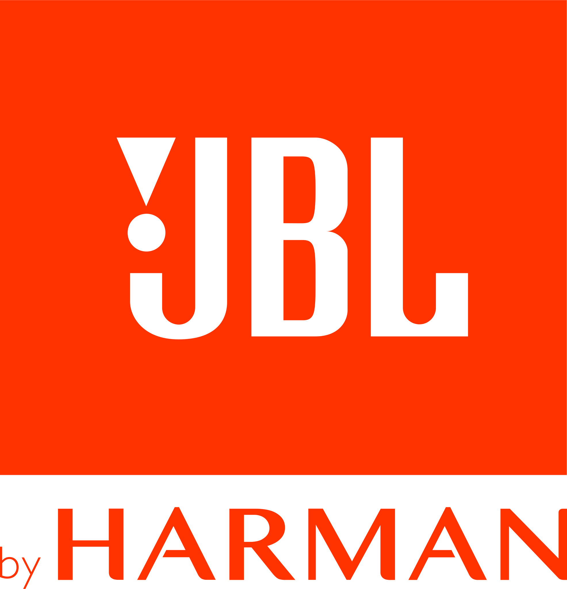

Adoptar no solo significa darles un hogar; significa darles amor, seguridad y la oportunidad de vivir una vida plena y feliz. En nuestro refugio, trabajamos incansablemente para proporcionarles atención veterinaria, alimentos nutritivos y un ambiente seguro mientras esperan ser adoptados.

Perros rescatados
Perros dados en adopción
Perros atendidos
Donaciones recibidas